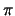

Up: QIP 2001 Program Previous: Directions
We define quantum walks on finite graphs. An interesting question is how to capture the notion of mixing time in such processes; Quantum walks are unitary, and therefore we cannot expect convergence to a stationary distribution. Nevertheless, the notion of quantum mixing time can be defined, which captures the speed at which the process evolves.
We show that for the quantum walk on a circle of length n, the quantum mixing time is almost quadratically faster than its classical analogue. On the other hand, we prove a lower bound, showing that for any graph, a quantum walk can mix at most polynomially faster than its classical analogue.
Joint work with Andris Ambainis, Julia Kempe, and Umesh Vazirani.
First, I will show a simple quantum protocol for coin flipping in which no cheating party can achieve one outcome (0 or 1) with probability more than 0.75. This is the best provable result known and it improves the previous 0.91...of Aharonov, Ta-Shma, Vazirani and Yao (STOC'00.) I will also show that the new protocol is optimal for a restricted class of protocols.
Second, I will show a general lower bound on how good can be protocols that are restricted to k messages between Alice and Bob. This bound implies that, to decrease the bias , one needs to increase the number of messages (rounds), not just exchange a lot of qubits in few rounds.
We show that a small constant number of bits of communication is sufficient to simulate the effect of a single bit of entanglement, but exponentially many bits of communication are required to simulate the effect of several bits of entanglement. Therefore, quantum entanglement can always be traded for classical communication, but the cost may be prohibitive.
This is joint work with Richard Cleve and Alain Tapp.
As an application of the above depth bound, we show that Shor's factoring algorithm may be based on quantum circuits with depth only O(log n) and polynomial size, in combination with classical polynomial-time pre- and post-processing.
Next, we prove an (log n) lower bound on the depth complexity of approximations of the QFT with constant error. This implies that the above upper bound is asymptotically tight (for a reasonable range of values of ).
We also give an upper bound of O(n (log n)2 log log n) on the circuit size of the exact QFT modulo 2n, for which the best previous bound was O(n2).
Finally, based on our circuits for the QFT with power-of-2 moduli, we show that the QFT with respect to an arbitrary modulus m can be approximated with accuracy with circuits of depth O((log log m) (log log(1/))) and size polynomial in log m + log(1/).
This is joint work with John Watrous.
This is joint work with Sean Hallgren.
Joint work with C. H. Bennett, J. A. Smolin, B. M. Terhal, and W. K. Wootters.
A number of properties of Kolmogorov complexity extend naturally to the new domain. Approximately, a quantum state is simple if it is within a small distance from a low-dimensional subspace of low Kolmogorov complexity. The von Neumann entropy of a computable density matrix is within an additive constant from the average complexity. Some of the theory of randomness translates to the new domain.
We explore the relations of the new quantity to the quantum Kolmogorov complexity defined by Vitányi (we show that the latter is sometimes as large as 2n - 2 log n) and the qubit complexity defined by Berthiaume, van Dam, and Laplante. With respect to cloning, our complexity behaves similarly to the latter one.
We give a quantum version of this classical binary search algorithm. The algorithm initiates several independent walks at the root, each walk advancing down the tree at its own speed. Then, instead of having each walk advancing only (at most) 1 node at each step, we give a routine that allows them to cooperate. Two walks that are at neighboring nodes (which must be in a parent-child relation) can, by cooperating, jump simultaneously to the same child, hereby advancing 1 and 2 nodes, respectively. Having a routine that allows 1 walk to advance 1 node, while another walk advances 2 nodes, yields, after taking care of details, a log3(N) exact quantum algorithm for ordered searching.
Our quantum algorithm can be implemented in parts by the quantum version of the Haar transform, which is the most basic wavelet transform. We find this to be an interesting aspect since most existing quantum algorithms are based primarily on quantum Fourier transforms and amplitude amplification. Little in our algorithm seems to render impossible similar enhanced quantum versions of other classical algorithms based on graphs.
The currently best known upper bound for exact ordered searching is roughly 0.526 log2(N), due to Farhi, Goldstone, Gutmann, and Sipser. We also give a lower bound of 1/(ln(N) - 1) for any exact quantum algorithm, improving upon Ambainis' bound of 1/12 log2(N) - O(1). Our lower bound is based on a weighted all-pairs inner product argument.
This talk is based on joint work with Jan Neerbek.
Now we may think of classical information as a separate kind of resource and ask a more probing question: to what extent can the quantum information of E be faithfully encoded into A qubits/signal and B classical bits/signal in such a way that A is minimised while B may be as large as desired? Our main result is that the minimal A in this scenario is still S (assuming that the signal states do not fall into two or more orthogonal subspaces). Thus in this sense, quantum information is fully robust against classicization.
In this talk we will discuss various aspects of this result including some interesting information-disturbance relations that are needed in the proof and some remaining open questions.
Joint work with Howard Barnum, Patrick Hayden, and Andreas Winter.
What about the transmission of quantum messages ? Is it possible in this case to perform encryption using a finite secret key ? The answer to this question is trivially yes. It requires actually a key of 2n secret bits to encrypt n qubits. In this talk, I will discuss this issue and also show that 2n bits of key are necessary.
Another important question in quantum cryptography is the authentication of quantum messages. I will sketch some very recent result on this topic. I will present a protocol to code a quantum message using a finite private key in such a way that it is possible for the receiver (possibly the sender in the future) to perform a test such that if it succeeds then the fidelity of the transmitted state is exponentially close to the original state except with exponentially small probability. That is, if a malicious player tries to forge a message or even only to modify the content of a message, he will be caught with probability exponentially close to 1.
Joint work with Andris Ambainis, Claude Crepeau, Daniel Gottesman, Michele Mosca and Ronald de Wolf.
Joint work with David DiVincenzo and Debbie Leung.
We give two applications of this quantum fingerprinting scheme. Firstly, in the variant of communication complexity known as ``simultaneous message passing'', we give an exponential quantum-classical gap for the equality function. Secondly, we show that quantum data structures for representing very sparse sets can be made exponentially smaller than classical data structures representing those sets.
This is joint work with Harry Buhrman, Richard Cleve, and John Watrous
Send feedback to qip@cwi.nl.